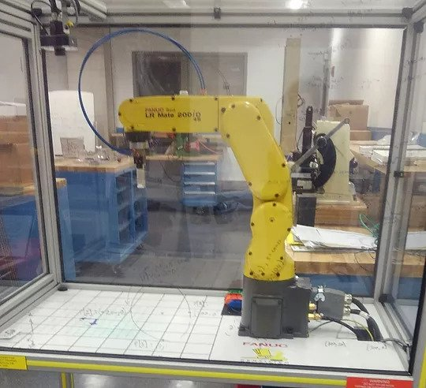
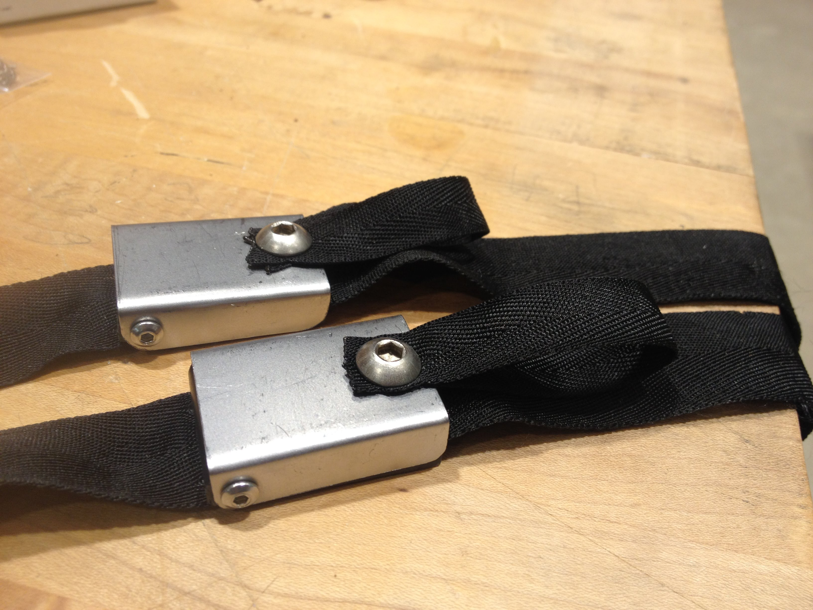
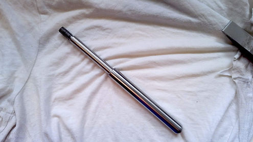
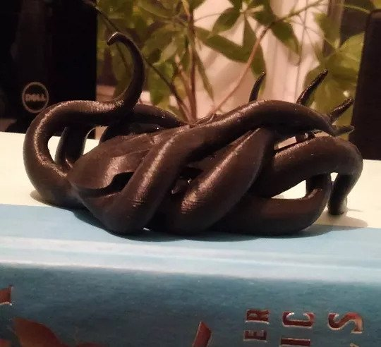
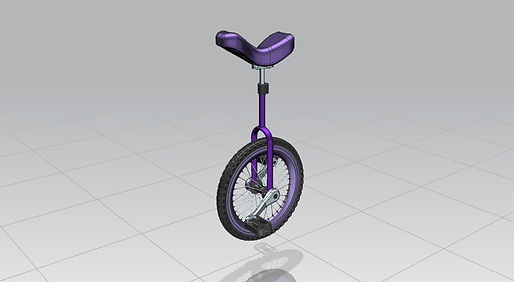

-
 See more...
See more...Utility Garden Stool
For my capstone design project, my team and I developed a user-centered outdoor seat for middle aged to elderly gardeners.
-

See more...
FANUC LR Mate 200iD
With another student, I developed curriculum to teach senior mechanical engineers how to use a FANUC LR Mate 200iD industrial robot.
-

See more...
Foley Catheter Bag System
For my first freshman design project in college, my team and I worked with the Shirley Ryan Ability Lab in Chicago to develop a foley catheter bag system that could easily be used by people with limited dexterity.
-
 See more...
See more...Bicycle Knee Brace
For my second freshman design project, I worked with a new team to develop a brace that can help people ride bikes after experiencing strokes.
-
 See more...
See more...Mechatronics & Electronics Projects
One of my favorite subfields of mechanical engineering is mechatronics, the interface between mechanical and electrical.
-

See more...
Machining Projects
Since the day I first set foot in the Ford Prototyping Lab at Northwestern, I've loved machining!
-

See more...
3D Prints
An assortment of 3D prints I've made (from scratch!) and how I made them.
-

See more...
CAD Projects
Sometimes CAD is just the start of a project. Sometimes it's the whole thing.